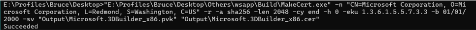
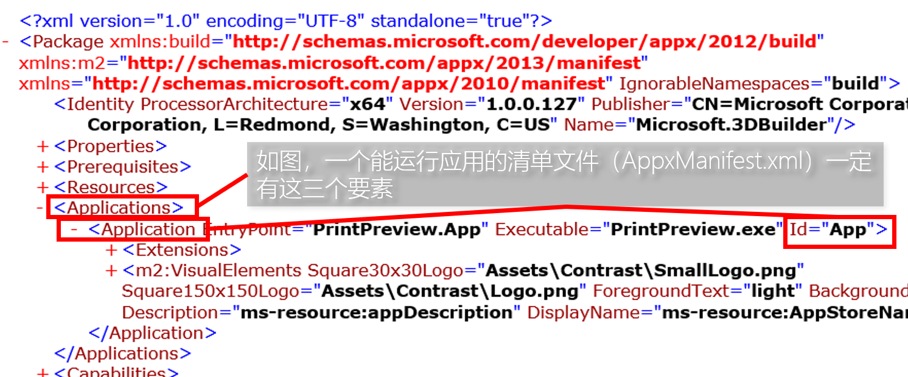

如何重签名或重打包 Metro 应用
看 PowerPoint 版教程
创建签名文件
准备文件
以下文件来自 Windows Kits（包括 Windows 8.x 和 10），如果做 Metro/UWP 应用的相关开发会有这些工具。
makecert.exe – 签名创建工具
pvk2pfx.exe – 将 PVK 文件转换为 PFX 文件
除了从 Windows Kits 获取以上文件，还可以从 WSAppBak 获取。（WSAppBak 会带这些文件，用于 Appx 的打包和签名）
回到目录创建 CER 和 PVK 文件
该教程来自 WSAppBak 的源码。这里不介绍原理，只介绍方法，具体的上网搜。
打开命令行，为了方便操作，我们直接 dir 到前文提到的工具所在的目录。
我们输入以下命令
makecert.exe -n <Identity_Publisher> -r -a sha256 -len 2048 -cy end -h 0 -eku 1.3.6.1.5.5.7.3.3 -b 01/01/2000 -sv <Output_PVK_File_Path> <Output_CER_File_Path>
例如：
"E:\Profiles\Bruce\Desktop\Others\wsapp\Build\MakeCert.exe" -n "CN=Microsoft Corporation, O=Microsoft Corporation, L=Redmond, S=Washington, C=US" -r -a sha256 -len 2048 -cy end -h 0 -eku 1.3.6.1.5.5.7.3.3 -b 01/01/2000 -sv "Output\Microsoft.3DBuilder_x86.pvk" "Output\Microsoft.3DBuilder_x86.cer"
如截图所示，这时候弹出一个窗口（窗口上的文本我自己用 Resource Hacker 翻译了，实际上都是英文），提示是否创建密码。这个根据自己的需求。密码不影响 CER 证书导入，影响 PFX 证书的导入。这里我们就不用密码了。（注意，不要直接关闭窗口，而是点“OK”或“None”
如截图所示，如果没有创建成功，则会输出错误信息。如果成功，会输出“Succeeded”

回到目录
创建 PFX 文件
该教程来自 WSAppBak 的源码。这里不介绍原理，只介绍方法，具体的上网搜。
打开命令行，为了方便操作，我们直接 dir 到前文提到的工具所在的目录。
准备之前的 CER 文件和 PVK 文件（这两个文件是配套的）
输入以下命令行：
pvk2pfx.exe -pvk <PVK_File_Path> -spc <CER_File_Path> -pfx <Output_PFX_File_Path>
例如：
"E:\Profiles\Bruce\Desktop\Others\wsapp\Build\Pvk2Pfx.exe" -pvk "Output\Microsoft.3DBuilder_x86.pvk" -spc "Output\Microsoft.3DBuilder_x86.cer" -pfx "Output\Microsoft.3DBuilder_x86.pfx"
如果成功了，那么不会有什么输出
如果在创建 CER 文件和 PVK 文件使用密码，那么在创建 PFX 文件时仍要输入密码。（与创建 CER 文件和 PVK 文件输入的密码一样）。同样，成功是不会有什么输出
这里的窗口仍然是我翻译并修改的，其实平常能获得到的资源是英文。
PFX 将用来导入签名，或者用于应用商店包的重签名。
CER 将用于导入证书。
CER 和 PVK 用于生成 PFX 文件。
包的签名
准备文件
以下文件来自 Windows Kits（包括 Windows 8.x 和 10），如果做 Metro/UWP 应用的相关开发会有这些工具。
signtool.exe – 应用包签名工具。
注意，使用前请建议右击查看程序的版本，建议版本为 6.3.xxxxx.xxxxx 版本及以上，6.2.xxxxx.xxxxx 版本不支持签名 AppxBundle 包。至于 Msix/MsixBundle 包的签名，这里不做考虑。（看 Msix/MsixBundle 是从哪个系统版本出现就从哪个系统版本的 Kits 提取）
除了从 Windows Kits 获取以上文件，还可以从 WSAppBak 获取。（WSAppBak 会带这些文件，用于 Appx 的打包和签名）
回到目录使用 SignTool 对包进行签名
该教程来自 WSAppBak 的源码。这里不介绍原理，只介绍方法，具体的上网搜。
准备一个应用商店包（Appx/AppxBundle/Msix/MsixBundle，确保是 SignTool 支持的），和 PFX 签名文件。
打开命令行，为了方便操作，我们直接 dir 到 signtool.exe 所在的目录。
然后我们输入以下命令行：
signtool.exe sign -fd SHA256 -a –f <PFX_File_Path> <Package_File_Path>
例如：
signtool.exe sign -fd SHA256 -a -f "Sign File.pfx" "File WillSign.appx"
等待完成签名，当出现“Successfully signed”就意味着签名成功。
如截图：
简化操作：
我们不用每次都输入那几个不变的命令参数，只需要创建一个快捷方式即可。
我们把一个文件拖到快捷方式，执行的是“exec.lnk %1”（%1 作为占位符指的是传入的命令行参数文本，这里指的是拖入的文件路径文本，懂相关编程的应该会了解），假设快捷方式的目标为“exec.exe”，那么执行的是“exec.exe %1”
我们创建一个 signtool 的快捷方式，把目标设为“<signtool_file_path> sign -fd SHA256 -a -f”，如“"E:\Profiles\Bruce\Desktop\WSAppBak 1.1\WSAppBak\signtool.exe" sign -fd SHA256 -a -f”，当我们用命令行调用这个快捷方式时，直接输入：
signtool.lnk <PFX_File_Path> <Package_File_Path>
实际上执行的是“<signtool_file_path> sign -fd SHA256 -a –f <PFX_File_Path> <Package_File_Path>”
如截图：
注意：
签名 AppxBundle 时，请用较高版本的 signtool.exe，AppxBundle 在 Windows 8.1 出现，那么用 8.1 的 Windows Kits 即可。如果 signtool.exe 版本不支持，会出现以下输出。
注意证书颁发者（我也没弄清具体原因），如果与商店应用包的清单中的 Identity Publisher 不对应，可能会导致签名失败
通常我们不用对商店应用的运行时包和 AppxBundle 中的资源包进行重签名。重签名适用于安装后能运行应用的包。运行时包和资源包并不属于这种安装后能运行应用的包。
还有一种情况是这个包因为数字签名而无法安装，那么我们就要考虑重签名了。
运行时包和资源包（一般是 Appx/Msix 格式）的清单文件（AppxManifest.xml）中没有“Applications”节点或者“Applications”节点中无”Application”子节点或”Application”子节点中无“Id”属性值或“Id”属性值中文本为空

运行时包和资源包并不属于这种安装后能运行应用的包，因为这种包安装后仅会用于调用资源。可以从清单文件中看出，连“Applications”这个节点都没有
2024.09.16 补充：
通常我们用这个方法签名的时候，我们会发现，右键商店应用包打开属性，找到数字签名，然后查看详细信息，会发现如图所示：
那么如何解决这个问题呢？在这里发一个方法，仅供参考。
输入以下命令行：
signtool.exe sign /f <PFX_File_Path> /fd sha256 /tr <TimeStamp_Service_URL> /td sha256 <Package_File_Path>
例如：
"C:\Program Files (x86)\Windows Kits\8.1\bin\x64\signtool.exe" sign /f E:\Profiles\Bruce\Desktop\Others\wsapp\Output\6166dbef-3c7c-4be1-b09f-99c402d8581f\6166dbef-3c7c-4be1-b09f-99c402d8581f_neutral.pfx /fd sha256 /tr http://timestamp.comodoca.com/?td=sha256 /td sha256 "E:\Profiles\Bruce\Desktop\Others\wsapp\Output\6166dbef-3c7c-4be1-b09f-99c402d8581f\6166dbef-3c7c-4be1-b09f-99c402d8581f_neutral.appx"
注：
参数“/tr”说明：/tr <URL> 指定RFC 3161时间戳服务器的URL。如果未指定此选项（或/t），则签名文件将不会加时间戳。如果时间戳失败，则会生成警告。此开关不能与/t开关一起使用。
如果成功了，会是这个样子
当然，这个办法不是万能的，例如图中，经过相同处理，也是无效的签名。我认为是“部署”的问题，“TimeStamp_Service_URL”的问题：
一般从 Microsoft Store 获取的包，其数字签名应该与图中的大差不差。“部署”中有签名者为“Microsoft Time-Stamp Service”的成员（名称大差不差），如图：
回到目录
生成应用包
准备文件
以下文件来自 Windows Kits（包括 Windows 8.x 和 10），如果做 Metro/UWP 应用的相关开发会有这些工具。
makeappx.exe - 用于生成应用包
注意，使用前请建议右击查看程序的版本，建议版本为 6.3.xxxxx.xxxxx 版本及以上，6.2.xxxxx.xxxxx 版本不支持生成 AppxBundle 捆绑包。
除了从 Windows Kits 获取以上文件，还可以从 WSAppBak 获取。（WSAppBak 会带这些文件，用于 Appx 的打包和签名）
回到目录解压应用包
使用 WinAPI 解压 Appx 包和 AppxBundle 包
这个部分就需要懂些编程了。这里建议使用 Visual Studio 2012 及以上版本。（解压 AppxBundle 包需要使用 Visual Studio 2013 及以上版本）
相关例程请到 Github 找“Windows-classic-samples-main”项目中的 Samples→AppxPackingExtractAppx 和 Samples→AppxPackingExtractBundle。有 C++ 版本。
Github 项目链接：https://github.com/microsoft/Windows-classic-samples/tree/main
使用压缩软件解压应用程序包
注意：由于 Metro/UWP 应用在打包时文件/目录名都是经 URI 编码后储存的，只有用 WinAPI 解压包能恢复原来的文件名，否则用其他方法解压包获得的都是 URI 编码后的文件名。
所以在解压后需要把解压后的文件与目录名都要经过一次 URI 解码。否则在打包时文件名又要经过一次 URI 编码（其中“%”会编码成“%25”）
可以看到，“Win8%E5%AE%9D%E5%85%B8”经过 URI 解码得到的是“Win8宝典”
回到目录
还有一种，就是先安装上，然后进入 WindowsApps 目录，找到那个应用源文件所在的文件夹
生成 Appx 文件
该教程来自 WSAppBak 的源码。这里不介绍原理，只介绍方法，具体的上网搜。
打开命令行，为了方便操作，我们直接 dir 到 makeappx.exe 所在的目录。
命令行：
makeappx.exe pack -d <App_Folder_Path> -p <Output_Appx_File_Path> -l
例如：
"E:\Profiles\Bruce\Desktop\Others\wsapp\Build\MakeAppx.exe" pack -d "F:\Win8 Appx\Microsoft.3DBuilder_2015.209.2327.4143_neutral_~_8wekyb3d8bbwe\PrintPreview_1.0.0.127_Win32" -p "Output\Microsoft.3DBuilder\Microsoft.3DBuilder_x86.appx" -l
注意：“App_Folder_Path”指的是解压后的 Metro 应用程序目录，也就是欲打包的应用的 AppxManifest.xml 的根目录。“Output_Appx_File_Path”中生成文件的根目录必须存在。
如果打包成功，最终会输出“Package creation succeeded.”，如截图：
注意：生成后的 Appx 包是没有签名的，请看之前的方法对包进行签名，否则可能无法安装 Appx 包。
回到目录
生成 AppxBundle 文件
makeappx.exe 还可以生成 AppxBundle 文件，但需要 makeappx 版本至少为 6.3.xxxxx.xxxxx 及以上版本。
这里不详细介绍。请看此 Microosft Learn 链接对应的文章
链接：https://learn.microsoft.com/zh-cn/windows/win32/appxpkg/make-appx-package--makeappx-exe-?redirectedfrom=MSDN#to-create-a-package-bundle-using-a-directory-structure
使用工具生成并签名包
Windows Store App Backup (WSAppBak)
这么多步骤，处理起来也挺麻烦的。那么，WSAppBak 是你最好的选择。
WSAppBak 能帮助你打包和签名应用。只需输入应用所在的文件夹和输出的目录，可以很快速和便捷获取到应用包和签名文件。
实质：WSAppBak 是调用了之前提到的程序进行打包和签名的操作。
这个软件的源码已经有人找出来并放在 Github 上
项目链接：https://github.com/Wapitiii/WSAppBak
软件截图
有人做了 WinUI 3 版的，说实话还是很粗糙，且有系统版本限制。个人不推荐
Github 项目链接：https://github.com/MadCkull/WSAppBak
（吐槽一句不好看，窗口挺大且不能更改大小，但是能通过双击标题栏最大化或还原，我截图的系统为 Windows 10 22H2）
WinUI 3 版软件截图

WinUI 3 版在 Github 项目上的软件截图（话说为什么差了这么多？）
使用方法：
第一步：先输入欲打包的 Metro/UWP 应用所在的文件夹，然后按 Enter 键。注意，这个文件夹必须有 AppxManifest.xml
注意：如果文件夹路径中有空格不用在路径首位用引号括上
第二步：然后输入用于输出文件的文件夹。这个输出文件夹必须存在。然后开始回车执行。
注意：如果文件夹路径中有空格不用在路径首位用引号括上
打包过程会经历前文的那些东西
截图（签名处理）
最后完成的截图
回到目录
参考链接
应用包生成工具 (MakeAppx.exe) - Microsoft Learn
链接：https://learn.microsoft.com/zh-cn/windows/win32/appxpkg/make-appx-package--makeappx-exe-?redirectedfrom=MSDN
MakeCert - Microsoft Learn
链接：https://learn.microsoft.com/zh-cn/windows-hardware/drivers/devtest/makecert
Pvk2Pfx - Microsoft Learn
链接：https://learn.microsoft.com/zh-cn/windows-hardware/drivers/devtest/pvk2pfx
SignTool.exe（签名工具）- Microsoft Learn
链接：https://learn.microsoft.com/zh-cn/dotnet/framework/tools/signtool-exe
win免费下载应用商店的付费应用 - 哔哩哔哩
链接：https://www.bilibili.com/read/cv27341253/
如何重新打包和签名 Appx 包 - 哔哩哔哩
链接：https://www.bilibili.com/video/av1702644573/
windows程序的数字签名 - 知乎
链接：https://zhuanlan.zhihu.com/p/676658554
2024.08.18
2024.09.06 2025.02.18 修改